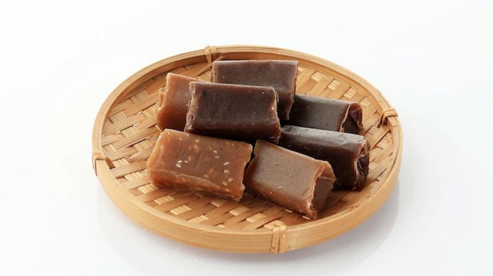
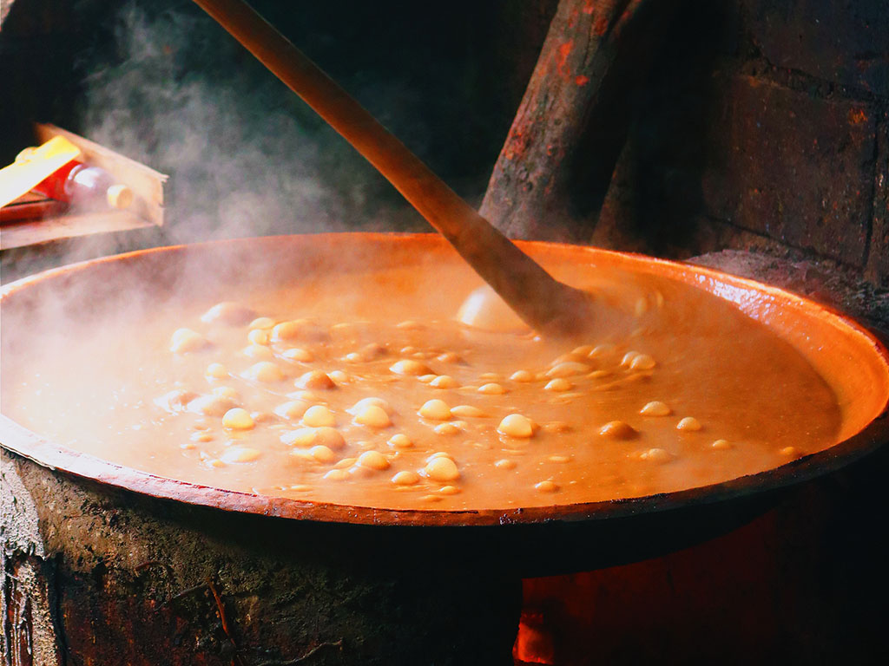
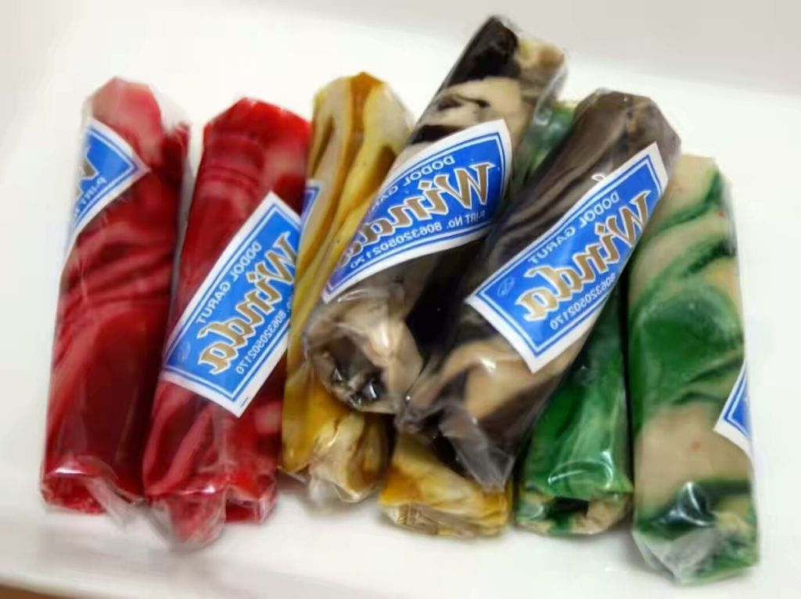
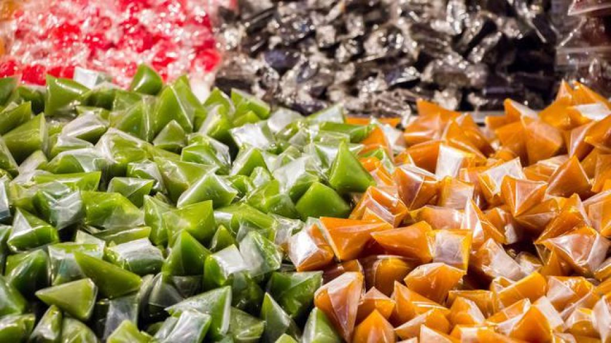
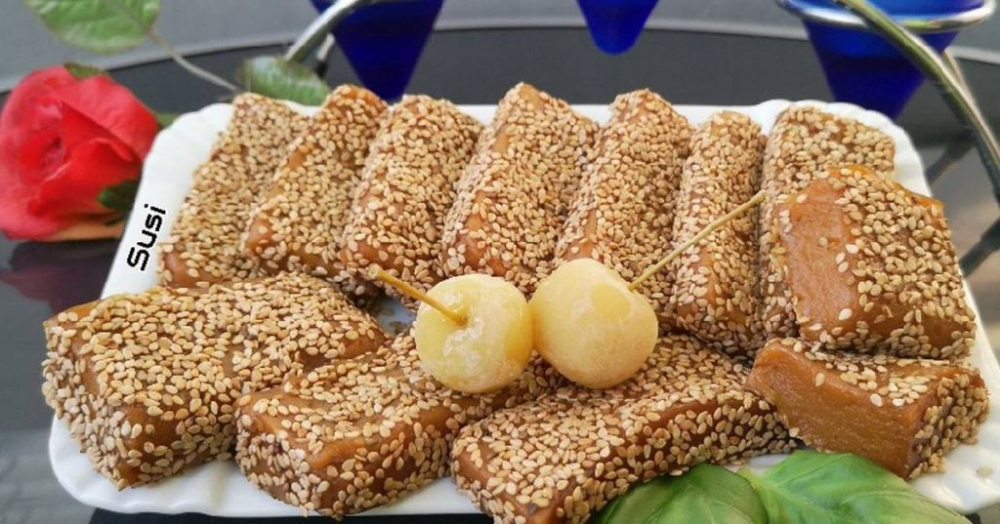
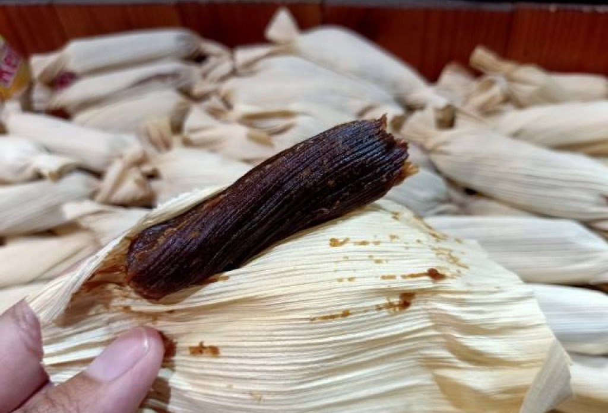
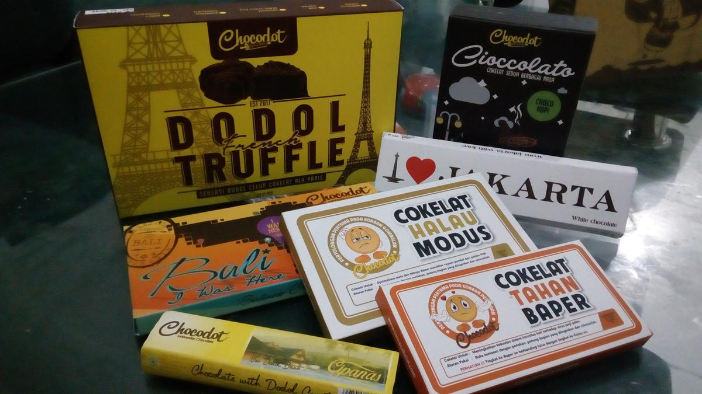

Sejarah Dodol Garut

Berdasarkan situs resmi Kemdikbud, industri dodol di kabupaten ini mulai berkembang sekitar tahun 1926 atau hampir satu abad yang lalu. Salah satu orang yang mengembangkan industri dodol saat itu adalah Karsinah.
Seiring berjalannya waktu, industri dodol di Garut pun semakin berkembang sampai mengalami berbagai modifikasi pada segi bahan baku dan varian rasa. Mulai muncul dodol Garut yang berbahan baku kentang, kacang, sirsak, nanas, waluh, wijeh, srikaya, durian dan sebagainya.
Pembuatan Dodol Garut

Proses pembuatan dodol Garut diawali dengan mendidihkan beberapa bahan baku sampai kental dan berminyak. Bahan baku tersebut di antaranya tepung beras ketan, gula merah aren, gula putih, dan santan kelapa. Proses pendidihan atau pemanasan bahan baku di atas membutuhkan waktu sekitar 7-8 jam agar adonan menjadi kental, berminyak, dan tidak lengket. Dan selama masa pemanasan, adonan harus terus diaduk secara terus-menerus.
Varian Dodol Garut
Dodol merupakan camilan yang berbahan dasar tepung beras ketan, gula, dan santan. Untuk menambah cita rasa, dodol kerap digabung dengan rasa lainnya yang menghasilkan varian baru. Camilan manis ini memiliki banyak macam-macamnya. Apa saja itu?
1. Dodol Zebra

Dodol ini diberi nama zebra karena memiliki motif yang mirip seperti kuda zebra, dan teksturnya yang lebih lengket dibandingkan dodol biasanya.
2. Dodol Buah

Pada saat pembuatan, adonan dodol diberi sari buah dan buah-buahan yang sudah dihancurkan. Rasanya sedikit asam manis.
3. Dodol Wijen

Dodol wijen sama seperti dodol pada umumnya, yang membedakan, di atas dodol akan ditaburi wijen.
4. Dodol Kacang

Pada saat pembuatan dodol, kacang merah yang telah direbus kemudian dihaluskan dan dicampur ke dalam adonan. Cita rasa kacang menambah kenikmatan pada dodolnya.
5. Coklat Dodol

Cokelat dodol merupakan sebuah inovasi menggabungkan makanan tradisional dengan makanan modern. Cokelat dodol yang lebih dikenal sebagai Chocodot merupakan cokelat isi dodol.